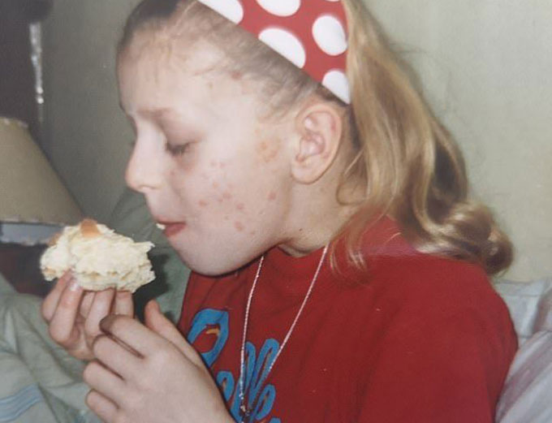

Zbavit se lupenky je možné
Dobré odpoledne všem. Jmenuji se Klára, je mi 31 let. Chtěla bych vám sdělit svůj skutečný příběh o boji proti lupénce. Jak to zničilo moje školní roky, jak jsem to zkoušela léčit a kam až mě to přivedlo. Kdyby ne můj strýček, který našel způsob, jak se zbavit lupénky - neměla bych vůbec možnost žít normální žívot. Tento příběh vám pomůže zahájit léčbu hned a od začátku správně, a tím pádem ušetřit čas, peníze a zdraví.
Chctěla bych povědět vám svůj krátký skutečný příběh o boji proti lupénce. Jak nemoc kazila ve škole můj žívot, jak jsem se ho snažila léčit a kam až to přivedlo. Ale nejdůležitější je, že jsem se této ošklivé nemoci zbavila! Tento příběh pomůže lidem, kteří mají tuto nemoc, vyhnout se chybám a co nejrychlejí zahájit správnou léčbu.
Školní roky
Na základní škole jsem byla velmi společenská, veselá a aktivní holka. Ale pak se všechno změnilo. Začali se mi vysmívat, vyhýbat se mě, smáli se, často jsem kvůli tomu brečela - to vše bylo kvůli lupénce.
lupenka, 4 třída
Pak jsem zažila skutečný stres. Vzpomínám si jak jsem seděla na školní chodbě a česala jsem si ruce až do krvé, počmárala jsem krví svou bílou školní halenku a plakala jsem.
Když šikana spolužáků už byla přílíš obtěžujicí, učitelé se snažili jím říct, že potřebují podporu, že mám vážnou nemoc a nikoho nenakazím. Ale když třídní odcházela pryč, oni začínali znovu - měla jsem toho dost. Z nervů se moje nemoc ale ještě víc zhoršovala. Koneckonců, ty hádky mě pořád znervozňovaly.

V16 let jsem byla jako všichni puberťácí. Moji spolužáčky začali si malovat make-up, nosit krátké sukně. Také jsem začala používát make-up ale to jen uškodilo mé pokožce – jsem měla červené skvrny na celé tváře, ložiska lupenky. Po takovém incidentu jsem poprosila mámu aby se mnou šla do nemocnice a napsala nemocenskou dovolenou a abych se učila doma, distančně, jen abych nechodila do školy. Ale dali jí jen pár týdnů.
Nemocnice, Léky, Hruza.
Jakmile se objevily první ložiska psoriázy, rodiče mě začali táhát po nemocnicích. Když jsem byla u doktora jsem vždy doufala, že uslyším něco pozitivního, že bude aspoň nějaká naděje na vyléčení, ale když jsem viděla smutné tváře svých rodičů a lékaře, pochopila jsem, že nikdy nebudu žít jako normální člověk. Tehdy jsem poprve dozvěděla z rozhovoru lékaře a mámy o takových nemocech, jako je HIV a hepatitida.
Bylo to velmi děsivé. Moje tělo pořád svědělo, odtrhávyli se kousky pokožky, objevovaly se krvácející rány, ložiska. Moji rodiče se ale nevzdávali. Se strachem a nadějí se mnou chodili k doktorům, konzultovali se, chtěli mi pomoct.

Po každé návštěvě doktora jsme s předpisem šli do lékárny a kupovali hodně léků na léčbu pokožky za hodně peněz. Doma jsem pořád rozmazavala veškeré druhy mastí a políkala hodně léků. Pro zvýšení účinku rodiče také měli arzenál různých lidových prostředků - koupel s bylin a různé lázeňské prostředky.
Komplikace
Průběh hormonálních léků dával smysl – psoriatické plaky mizely. Hormonální léky byly velmi drahé, a tlustlá jsem z těch léků. Musela jsem pořád dodržovát dietu, a nesměla jsem jíst pečivo a sladké. Tato omezení mi ale pomohlo zpomalit nárůst tělesné hmotnosti.
Pak jsem se stejně ztlustla a važila jsem 80 kilogramů. Dozvěděla jsem také, že hormonální léky způsobují važné onemocnění jater. Po chvíli se po celém těle objevili hrozné vředy.

Lékaři se o mě bály, vydali mi neschopenku na měsíc a vzali mě do nemocenské intenzivní péče. Píchali mi tam různé injekce, a dokonce jsem měla i krevní transfuze. Procházela jsem nekonečně lékařskými vyšetřeními každý den. Stýskalo se mi po rodině a příbuzných. Mimochodem, jídlo tam bylo velmi nechutné, dietické, z čehož jsem zhubla o pár kil.
Po nemocnici lupenka nezmizela, ale pokožka se trochu uklidnila. Odmaturovala jsem a dál jsem šla na univerzitu.
Vysoká škola, opakování nemoci, poslední naděje
Nějakou dobu bylo všechno v pořádku, ale na začátku semestru pořád jsem se musela seznamovát s novými lidmi, býla jsem z toho všeho strašně nervózní - psoriáza se více a více projevovala a zase se rozšiřovala.
Moje lupenka se ale rozšířila na 60% pokožky, její ložiska byla po celem těle: na hrudníků, krků, hlavě, pažích, nohou a zádech. Všechno svědělo, nebylo to možné vydržet ... a znovu krev.

Ve stresu jsem z přednášek šla domů a brečela do svého polštáře. Uzavírala jsem se na celý den do svého pokoje, nechtěla jsem s někým komunikovát a nikoho vidět, myslela jsem si, že z toho všeho budu mít za chvíli depresi. Jinák, když jsem se trochu uklidňovala a měla hlad, šla jsem do kuchyně.
Překvapilo mi ale jenom, když k nám jsednou přijel strýc. Neviděli jsme se několik let! Dříve jsme si telefonovali skoro každý týden pro sděleni si navzájem kdo co vyzkoušel na léčbu lupenky (on také měl tuto hroznou nemoc), jaké metody léčby jí zmirňují a jaké vůbec nefungují. Pak jsme se navzájem přestali volat.
Stryc byl bez jediného psoriatického ložiska na těle! Byla jsem v šoku a jen jedna otázka se mi točila v hlavě: Proč mě nezavolal a neřekl mě, že konečně našel nějaký lék?
Strýc pochopil, že bych také chtěla dozvědět tajemství, jak se uzdravil.
Stryc pověděl mi svůj příběh. Měl vážné komplikace lupenky kvůli nervozitě a rozhodl léčit lupenku v zahraničí. Konzultoval se tam s nejlepšími lékaři a pouze jeden lék byl schopen pomoct.
Zeptala jsem strýce - kolik ten lék stojí? Částku kterou nazval, bych musela šetřit několik let. Neměla jsem žádnou naději na vyléčeni, chtěla jsem z toho plakat, ale můj strýc mi dal nějaký lék s názvem a řekl, že to je velmi účinná léčivá mast na lupenku.
Nový lék od strýce
Když ale návštěva odešla, začala jsem na internetu hledát více o tomto léku. Ve skutečnosti ale všechno býlo jednodušší: léčivá mást se aplikuje na ložiska. Začala jsem se léčit.

Na zkoušce bylo hodně spolužáků, pohledy na mě a psoriatická ložiska znovu znepokojovali můj nervový systém, ale tentokrát psoriáza se nerozširovala. Věděla jsem o tom dobře.
Každý den jsem koukala do zrcadla a viděla jsem, že už ty ložiska mizejí. Dokonce bylo jen pár skvrn, které pak zmizely. Na univerzitě se na mě dívali normálně, a začali se mnou navazovát komunikace. Lupenku sice jsem mělá ale nevypadalo to tak ošklivě. Dokonce chlapy začali mě zvát na rande.
Začala jsem dokonce nosit kraťasy a trička, neskrývala jsem svoje tělo, a už jsem nebrečela kvůli této nemoci.
Ale začala jsem zase po nějaké době zase brečet, a to z jiných důvodu: Byla jsem ráda, že moje pokožka stala jako u normálních lidí. V noci se mi dokonce zdalo, že jsem pokryta skvrnami a ložisky, odkud vytekala krev, ale když jsem se probuzovala, uklidňivala jsem se, že vše je v pořádků.

Za několik let léčby nedošlo k opakování nemoci, bez ohledu na to, jak jsem byla občas nervózní. A dokonce tento týden jsem viděla stejný produkt v lékárně! Výrobce léčivé masti začal tento produkt prodávat prostřednictvím svých oficiálních webových stránek také. Dole máte odkaz na její webové stránky. Hodně štěstí a zdraví! Nevzdávejte se!